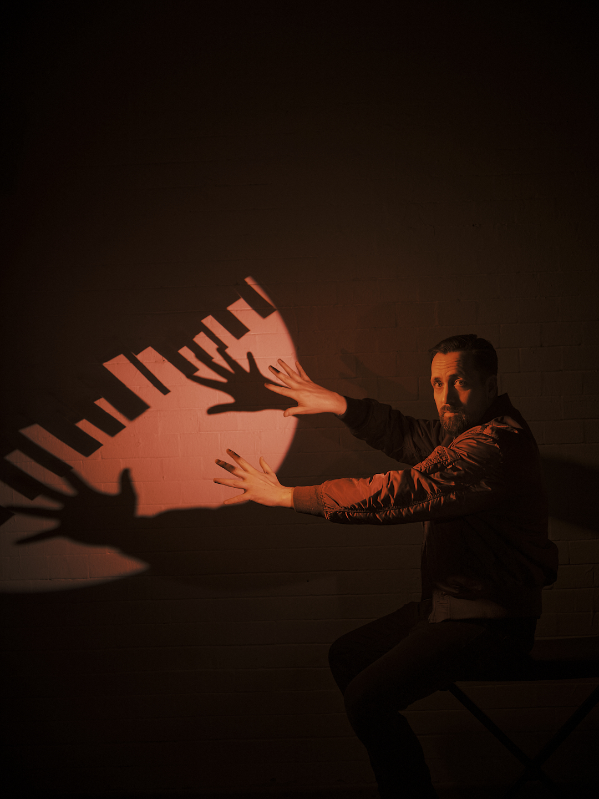

Kolumne
Der Konjunktiv hat Hausverbot
Über Danger Dan, Igor Levit, die ZDF-Intendanz und die Frage, warum ausgerechnet ein Lied namens „Keine Angst“ so viel Angst auslöst.
Kolumne anhören
Audio: KI-Version meiner eigenen Stimme · Text & Redaktion: Burg

Nehmen wir mal rein hypothetisch an, ein öffentlich-rechtlicher Sender lädt einen Künstler ein.
Nicht irgendeinen Künstler, sondern Danger Dan. Also einen Menschen, der nicht gerade dafür bekannt ist, politische Konflikte in Watte zu rollen, mit Schleifchen zu versehen und anschließend freundlich beim Programmdirektor abzugeben.
Dieser Künstler möchte in einer Satiresendung ein antifaschistisches Lied spielen.
Nicht in der „Immer wieder sonntags“-Spezialausgabe „Demokratie mit Sahnehaube“, sondern in „Die Anstalt“. Einer Sendung, die seit Jahren davon lebt, politische Zustände auseinanderzunehmen, Fakten auf die Bühne zu schleppen und das Publikum danach mit diesem Gesichtsausdruck zurückzulassen, bei dem man nicht weiß, ob man lachen, weinen oder den Rundfunkbeitrag in Pflastersteinen bezahlen möchte.
Nur mal ganz spekulativ.
Da könnte man natürlich sagen: Genau dort gehört so ein Lied hin.
Man muss dafür nicht jede Zeile abnicken. Kunst hat nicht automatisch recht, und ein Klavier heiligt auch nicht alles, was darauf ausgesprochen wird. Aber eine politische Satiresendung sollte vielleicht genau dafür da sein: Reibung auszuhalten, Grenzen sichtbar zu machen und anschließend darüber zu reden.
Performance. Kontext. Debatte.
Das war, wenn ich es richtig verstanden habe, sogar geplant. Danger Dan sollte auftreten, Igor Levit am Klavier sitzen und danach sollte das Ganze eingeordnet werden.
Also nicht sieben Minuten antifaschistisches Feuerwerk, dann Abspann, alle nach Hause und morgen wieder gepflegt Bausparvertrag.
Eigentlich ziemlich öffentlich-rechtlich.
Eigentlich.
Veto im Flur
Dann kam offenbar die ZDF-Intendanz und stellte sich in den Flur. Mit erhobenem Zeigefinger. Oder Aktentasche. Oder beidem.
Mehr als die öffentlichen Aussagen und bekannten Abläufe kenne ich natürlich auch nicht. Aber irgendwann fiel dieses schöne Wort, das in deutschen Institutionen immer klingt wie ein nasser Lappen auf Linoleumboden:
Veto.
Das ZDF erklärt inzwischen, der Text könne als Aufruf zu Gewalt verstanden werden.
Das ist wichtig.
Es heißt nicht: „Der Text ist ein Gewaltaufruf.“
Es heißt: „Er könne so verstanden werden.“
Da ist er wieder, der Konjunktiv.
Normalerweise ist der Konjunktiv im deutschen Kulturbetrieb ein kleiner Rettungsring. Man könnte, man dürfte, man würde. Man meinte das natürlich alles ganz anders.
Hier scheint er plötzlich Hausverbot zu haben.
Das Werkzeug
Und genau das ist interessant. Danger Dan bewegt sich seit Jahren in diesem Raum zwischen Aussage, Zuspitzung, Provokation, Recht, Kunst und politischer Wirklichkeit.
Das ist keine Panne in seinem Werk.
Das ist das Werkzeug.
Wer Danger Dan einlädt, bestellt keine Hintergrundmusik für betreutes Demokratienicken. Man bestellt einen Typen, der den Sicherungskasten findet und fragt, was passiert, wenn man da mal vorsichtig dran wackelt.
Vielleicht funkt es. Vielleicht geht das Licht aus. Vielleicht merkt man erst dann, dass die Leitung schon vorher beschissen verlegt war.
Nun stehen wir da.
Das ZDF sagt: zu heikel.
Danger Dan und Igor Levit sprechen von einem Eingriff in Meinungs- und Kunstfreiheit. Der Deutsche Journalisten-Verband kritisiert ein Durchregieren der Intendanz in redaktionelle Belange.
Und irgendwo in Mainz schwitzt wahrscheinlich ein Aktenordner.
Kein Blumengesteck
Ich will es mir nicht zu einfach machen. Natürlich kann man verstehen, warum ein Sender bei so einem Text nervös wird.
Wenn ein Lied nicht nur allgemein „Nazis doof“ sagt, sondern über Organisierung, Widerstand, Konfrontation und juristische wie politische Graubereiche nachdenkt, dann ist das kein Blumengesteck.
Das ist politischer Sprengstoff mit Klavierbegleitung.
Aber genau deshalb wirkt die Absage so schief.
Wenn der Text problematisch genug ist, um ihn zu stoppen, dann wäre die anschließende Einordnung nicht weniger wichtig gewesen.
Sondern wichtiger.
Darf Kunst nur gesendet werden, solange vorher niemand im Haus Bauchweh bekommt, braucht es keine Satiresendung mehr. Dann reicht ein Wetterbericht mit Haltung:
„Morgen im Süden vereinzelte Demokratie, im Osten zunehmende Unruhe, im ZDF vorsorglich Nebel.“
Was Angst macht
Das eigentliche Problem ist für mich nicht, dass das ZDF Angst hatte.
Angst ist okay. Sie kann sogar vernünftig sein. Manchmal ist Angst der kleine Typ im Kopf, der sagt: „Vielleicht nicht nackt über die Autobahn.“
Danke dafür.
Entscheidend ist, was danach passiert.
Angst kann dazu führen, genauer hinzusehen, zu diskutieren, zu widersprechen oder nachzufragen. Ein Sender könnte sagen: „Wir zeigen das, aber wir lassen es nicht unkommentiert stehen.“
Oder er macht kurz vor der Aufzeichnung die Tür zu und erklärt anschließend, man wolle alles irgendwann dokumentarisch-journalistisch aufarbeiten.
Das klingt ein bisschen wie:
„Wir haben keine Angst vor Debatte. Wir verschieben sie nur in einen anderen Raum, zu einem anderen Zeitpunkt, mit anderer Temperatur und hoffentlich weniger Puls.“
Gerade bei einem Lied mit dem Titel „Keine Angst“ ist das eine Pointe, die selbst dem müdesten Kabarettautor morgens um halb vier noch peinlich wäre.
Ausgerechnet dieses Lied löst offenbar so viel Unruhe aus, dass es nicht in einer Sendung über Radikalisierung und wehrhafte Demokratie stattfinden darf.
Da muss man erst einmal hinkommen.
Mit Anlauf. Und Dienstwagen.
Kontrollverlust
Ich glaube nicht, dass sich das ZDF hier einfach nur gegen Gewalt entschieden hat. Das wäre zu bequem.
Für mich wirkt es eher wie eine Entscheidung gegen Kontrollverlust. Gegen einen Moment, in dem Kunst nicht brav die These einer Sendung illustriert, sondern selbst zum Problem wird.
Plötzlich hätte das Publikum nicht nur zustimmend feststellen können, dass Rechtsextremismus schlimm ist. Es hätte sich mit unangenehmeren Fragen beschäftigen müssen:
Was heißt Widerstand, wenn staatliche Institutionen versagen?
Was darf Kunst sagen, wenn sie nicht nur mahnen, sondern drängen will?
Und ab wann wird antifaschistische Rhetorik so konkret, dass selbst Menschen nervös werden, die sich grundsätzlich für antifaschistisch halten?
Das wären gute Fragen gewesen.
Unbequeme Fragen.
Also genau die Sorte Fragen, für die man Satiresendungen angeblich macht.
Ich stehe in dieser Debatte deutlich näher bei denen, die das Lied hätten spielen lassen. Nicht, weil ich jede mögliche Deutung schlucke wie lauwarmes Festivalbier.
Sondern weil ich lieber Kunst sehe, die Ärger macht, als einen Kulturbetrieb, der Ärger erst ankündigt, dann abmoderiert und anschließend in die Mediathek delegiert.
Kein Wellnessbereich
Kunstfreiheit ist kein Wellnessbereich.
Sie ist auch kein Freifahrtschein für jeden Mist. Aber sie ist ziemlich wertlos, wenn sie immer genau dann kleiner gemacht wird, wenn sie nicht mehr hübsch über dem Sofa hängt.
Danger Dan wusste wahrscheinlich ziemlich genau, was er da macht.
Das ZDF wusste vermutlich ebenfalls ziemlich genau, wen es eingeladen hatte.
Und jetzt wirkt es, als sei plötzlich ein wildes Tier durch die Studiotür gelaufen.
Dabei stand auf der Einladung doch schon der Name.
Vielleicht ist das die eigentliche Lehre aus der Geschichte: Wer Kunst einlädt, die Grenzen auslotet, sollte nicht erschrecken, wenn sie am Zaun steht.
Und wer Antifaschismus möchte, aber bitte ohne Streit, Zumutung, Reibung und schwitzende Rechtsabteilung, möchte vielleicht eher ein Themenabend-Dekoobjekt.
Ein bisschen Haltung im Hintergrund. Nicht zu laut, nicht zu konkret und vor allem nicht kurz vor der Aufzeichnung.
Wenn ein Lied schon im Titel sagt, man solle keine Angst haben, wäre es möglicherweise eine schöne Idee gewesen, genau das einmal auszuprobieren.
Nur mal ganz hypothetisch.
Album und Tour
Falls ihr das jetzt alles nicht nur diskutieren, sondern hören wollt: Das neue Danger-Dan-Album „Keine Angst“ erscheint laut offizieller Linktree am 02.10.2026.
Die aktuell angekündigten Zukunftstermine der „Keine Angst“-Tour laut KKT Berlin:
- 22.10.2026 - Wiesbaden, Schlachthof (Zusatztermin)
- 23.10.2026 - Wiesbaden, Schlachthof (ausverkauft)
- 26.10.2026 - Erlangen, Heinrich-Lades-Halle
- 27.10.2026 - Stuttgart, Wagenhallen (ausverkauft)
- 28.10.2026 - Zürich, Volkshaus
- 30.10.2026 - Düsseldorf, Stahlwerk (ausverkauft)
- 31.10.2026 - Bremen, Pier 2
- 01.11.2026 - Bielefeld, Stadthalle
- 06.11.2026 - Berlin, Tempodrom (ausverkauft)
- 07.11.2026 - Berlin, Tempodrom (ausverkauft)
- 27.11.2026 - Leipzig, Haus Auensee
- 28.11.2026 - Hamburg, Inselpark Arena (ausverkauft)
- 29.11.2026 - Hamburg, Inselpark Arena (Zusatztermin)
- 18.12.2026 - Köln, Palladium
- 19.12.2026 - München, Zenith
- 20.12.2026 - Wien, Gasometer
- 11.09.2027 - Berlin, Parkbühne Wuhlheide
Quellencheck: Geprüft über das ZDF-Statement zur 100. Ausgabe „Die Anstalt“, das ZDFheute-FAQ zur Ausladung, das tagesschau-FAQ vom 17.07.2026, DWDL zur kurzfristigen Absage, ZEIT/KNA zur DJV-Kritik, die KKT-Berlin-Seite zu Danger Dan und die offizielle Danger-Dan-Linktree. Bewertungen und Bilder im Text sind Kolumne, keine Tatsachenbehauptung über interne Abläufe.